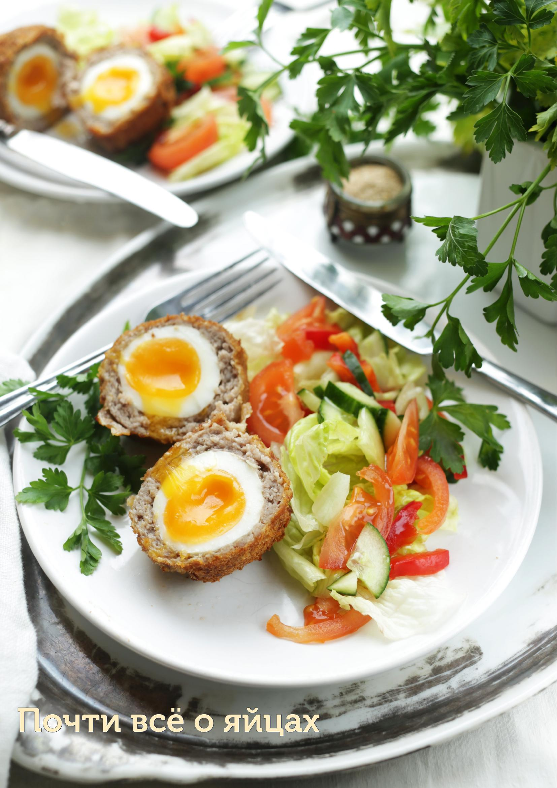

Трудно представить себе современную кулинарию без универсального, поистине незаменимого продукта — яиц. Спектр блюд, где используется яйцо в том или ином виде, огромен: омлет, скрэмбл, фриттата, фаршированные яйца, тортилья, яйцо пашот; выпечка со взбитыми белками, соусы на желтках.
Куриные — самый распространенный и универсальный продукт. В среднем вес одного куриного яйца составляет 55 г. Белые и коричневые яйца не отличаются по вкусу и составу: просто белые яйца несут белые куры, а коричневые — птицы с оперением соответствующего цвета.
Перепелиные — вторые по популярности, считаются диетическим продуктом. Размер маленький (3–4 см в диаметре, 10–12 г). Скорлупа тонкая, светлая, с темно-коричневыми пятнышками.
Утиные — более крупные, чем куриные (70–90 г). Легкий специфический привкус дичи и более яркий желток. В отварном виде белок упругий, слегка «резиновый».
Гусиные — в 3,5 раза больше куриных (180–200 г). Если варить слишком долго, могут стать твердыми. Скорлупа довольно пористая, чаще всего их добавляют в выпечку.
Страусиные — вес от 450 до 1800 г. Калорийность низкая, 120 ккал. На вкус практически не отличаются от куриных, разве что желток более насыщенный и «маслянистый». Белок при жарке становится слишком плотным — лучше готовить омлет.
Яйца неплохо хранятся при комнатной температуре, но привычнее держать их в холодильнике (до 3 месяцев). Рекомендуется хранить острым концом вниз. Не держать в дверце холодильника (особенно если планируете готовить яйца пашот) — при постоянной тряске белок разжижается.
Нужно ли мыть яйца?
Необходимости мыть чистые на вид яйца нет — у них есть натуральное покрытие на скорлупе, защищающее содержимое от порчи. Делать это стоит лишь при видимом загрязнении скорлупы непосредственно перед использованием.
Яйцо всмятку: положить яйца комнатной температуры в холодную воду, довести до кипения, убавить огонь до слабого и варить 3–4 минуты.
Яйцо в мешочек: то же самое, варить 6 минут.
Яйцо вкрутую: положить в холодную воду, довести до кипения, снять с огня, накрыть крышкой и оставить на 16–18 минут. Затем переложить в холодную воду.
Яйцо пашот — это сваренное в мешочек яйцо без скорлупы, с нежным жидким желтком. Для приготовления нужны максимально свежие яйца. Разбить яйцо в мелкое ситечко, дать жидкой фракции белка стечь, перелить яйцо в небольшую кофейную чашку. В невысокий сотейник налить воду, хорошо посолить и нагреть до 85–90 °С. Аккуратно поднести край чашки к поверхности воды и дать яйцу соскользнуть. Варить 3–5 минут.
Глазунья: разогреть сковородку с топленым маслом — когда в масле появятся первые пузырьки, влить яйцо. Жарить на средне-слабом огне 2–3 минуты.
Скрэмбл: растопить масло на средне-слабом огне, влить яйца и постоянно перемешивать лопаткой. Когда яйцо начнет схватываться, по желанию добавить ложечку жирной сметаны или крем-фреша, посолить. Перемешивать, пока скрэмбл слегка не загустеет, но останется влажным и нежным.
Омлет: яйца разбить в миску, перемешать вилкой (не взбивать). Посолить, по желанию влить молоко или сливки. Разогреть сковородку с маслом на среднем огне. Влить яичную смесь и готовить, сдвигая лопаткой к центру, когда яйцо схватится по краям. Повторить 2–3 раза. Скрутить омлет рулетом и переложить на тарелку.
Яичный салат: сварить вкрутую 6 яиц, нарезать крупными кубиками. Добавить рубленые укроп и петрушку, мелко нарезанные корнишоны. Смешать 100 г майонеза, 1 ч. л. дижонской горчицы, 1 ст. л. маринада от корнишонов, посолить, поперчить. Перемешать с яйцами.
Фаршированные яйца: сварить вкрутую 6 яиц, разрезать пополам, вынуть желтки. Обжарить до хруста 3–4 ломтика бекона. Размять желтки, добавить 1 ч. л. дижонской горчицы, 3–4 ст. л. сметаны или майонеза, щепотку паприки, соль и перец. Наполнить начинкой белки. Посыпать раскрошенным беконом.
Яйца по-шотландски от Джейми Оливера (на 8 порций): сварить 8 яиц 4–5 минут (желток жидкий), остудить и очистить. Из фарша 8 колбасок (или 800–900 г свиного фарша) с рублеными зеленью (шнитт-лук, петрушка), мускатным орехом, горчицей, солью и перцем сформировать 8 лепешек. Обернуть фаршем яйца. Обвалять в муке, яйце, хлебных крошках (дважды). Жарить во фритюре при 150 °С 4 минуты до золотистого цвета. Подавать горячими с корнишонами и маринованным луком.
Шакшука от Йотама Оттоленги: разогреть 2 ст. л. оливкового масла, добавить 1 ч. л. хариссы, 2 ч. л. томатной пасты, 300 г нарезанного красного перца, 4 зубчика чеснока, 1 ч. л. кумина и 1/2 ч. л. соли. Готовить 10 минут. Добавить 800 г томатов, варить еще 10 минут до загустения. Сделать 8 углублений, выпустить яйца. Готовить 8–10 минут (белки схватились, желтки жидкие). Подавать с йогуртом.
«Неправильная» тортилья от Найджела Слейтера: натереть 800 г картофеля на крупной терке, добавить 3 яйца, 1 ст. л. муки, соль, перец и мелко порубленный зеленый лук с петрушкой, мятой и эстрагоном. Выложить в сковородку 24 см. Жарить на слабом огне 15 минут, затем подпечь под горячим грилем до румяной корочки.